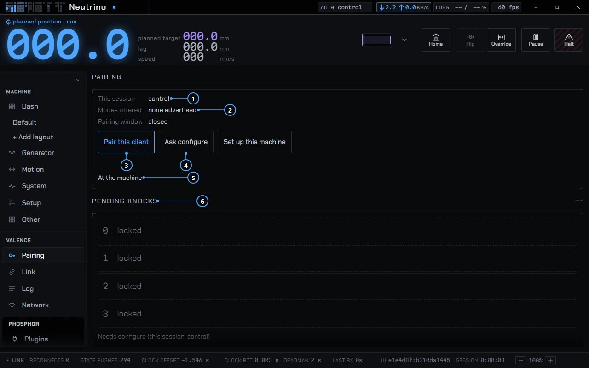
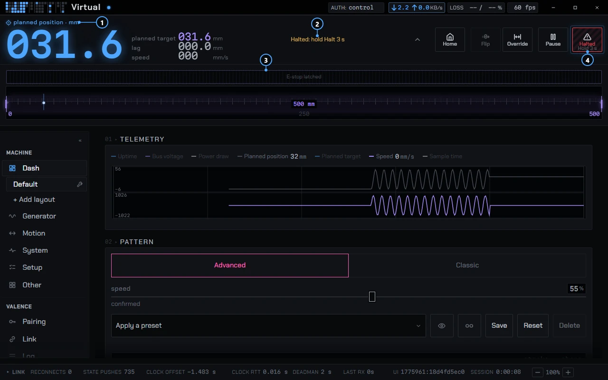

Connecting and pairing
How Phosphor finds a machine, how a new machine gets onto Wi-Fi, who is allowed to do what, and how you approve a new client. Parts of the Pair button behavior are draft and are marked.
Finding a machine
Hubs, Find a hub, Scan sends a UDP discovery probe on your local network and waits 1.5 s. Only if no machine answers does it start a Bluetooth scan. Bluetooth permission prompts therefore wait until the network has found nothing. The probe that runs at launch is network-only and never raises a Bluetooth prompt.
You can also type an address as host or host:port; the port is 82 when you leave it off. If the field is empty, Phosphor says "Enter a hub address". Saved hubs get a nickname you can edit, and a Connect, Sim and Forget button.
Wi-Fi and Bluetooth
Wi-Fi is the normal link: a WebSocket to the machine on port 82. In the app, a Wi-Fi session starts at the control tier. Bluetooth is for setting a machine up and for reaching one that is offline. A Bluetooth session starts at the watch tier by design, and the status line reads "Live on <address> over Bluetooth (watch tier)".
If the machine offers a Wi-Fi address, Phosphor probes it once, hops to Wi-Fi when it answers, and falls back to Bluetooth if the Wi-Fi session is not live in time. The Upgrade to Wi-Fi button on the Hubs page retries by hand. A browser page cannot use Bluetooth, so only the app can do this.
Set up a machine over Bluetooth
Use this for a machine that has no Wi-Fi yet, or that lost its network. Open Hubs and press Set up a machine, or press Set up on a row marked needs setup. That mark means the machine is in config mode or reports no Wi-Fi.
- Scan. Machines that need setup sort first.
- Press Set up on your machine. Phosphor connects over Bluetooth and asks for the configure tier. The status reads "Asking for configure", then "Press Pair on the machine".
- Press Pair on the machine. Setup continues on approval.
- Choose a network. Where the machine can list the networks it hears, Phosphor shows them strongest first with signal bars, and asks for the passphrase once. Where it cannot, you get a setup form built from the machine's own Setup settings. WIP The network list depends on a draft protocol change.
- Phosphor sends the join, then waits up to 30 s for the machine to appear on Wi-Fi and connects to it. "Connected over Wi-Fi" means it worked.
If the machine does not appear, the status reads "Joined, but the hub did not appear on WiFi", with Try again. The setup flow itself does not store or log the network name or passphrase; the form sends them to the machine. The wait is 30 s because a machine can reboot after it joins.
Access tiers
Every session has one of three tiers. The Pairing page shows yours under "This session".
- watch
- Connect, browse and subscribe. No pairing needed.
- control
- Send intents and streams, and drive motion.
- configure
- Change configuration and administer access: approve or deny pairing, revoke and evict.
Pause and E-Stop work from every tier, even watch: a client can stop a machine it cannot drive. Controls above your tier are grayed with a reason, such as "Needs configure" or "session not authorized".
Pairing
Pairing is how a client gets a tier above watch. A machine can offer several ways in: knock and approve, a numeric PIN, and push to pair. The Pairing page lists the ones this machine offers under "Modes offered", and shows whether the pairing window is open.

- This session shows your tier.
- Modes offered lists the ways this machine lets a client in.
- Pair this client sends a knock.
- Ask configure asks for the top tier.
- At the machine is the help text for the machine's own Pair button.
- Pending knocks lists the clients waiting for approval.
From Phosphor
- Pair this client
- Sends a knock. The status reads "Knock sent: waiting for the hub", then "Knock delivered: waiting for approval". Someone at configure approves it, or presses Pair on the machine. If nobody answers, it ends with "Knock expired" or "No answer within the pairing window".
- Ask configure
- Asks for the top tier. The status reads "Asked configure: double-press Pair on the machine". If another client already has an ask pending, a double press approves neither.
- Pending knocks
- Lists the clients waiting. Approve and Deny need configure.
- Trust ledger
- Lists paired clients. Control ownership lists who holds each motion source, and Evict removes a session (needs configure).
A factory-fresh machine gives its first knock the configure tier. After that, a window grants control, and configure by approval only.
At the machine
Phosphor's own help text, under "At the machine" on the Pairing page, says:
- Press Pair: a 120 s window, control (configure if unclaimed).
- Ask configure, then double-press Pair to approve it.
- Hold Pair 5 s: every client drops to watch.
- No Pair button: power-cycle three times, each within 10 s of boot.
The window stays open for 120 s after the press. The power-cycle trick is for a machine with no Pair button.
WIP The double press, the 5 s hold, and a single press that approves a configure ask on a machine that has lost its network are protocol drafts. The firmware has them, and they may change before release.
Booting a machine with Pair held puts it in config mode: Bluetooth and USB serial only, no Wi-Fi, and the first knock gets configure.
What E-Stop does
E-Stop is one control with two states, in the top strip on every page. Tap it to latch. The strip then reads "Halted: hold E-Stop 3 s", and holding the same button for 3 s releases it. There is no separate clear button. A machine that cuts motor power on E-Stop shows E-Stop on the button, and the tooltip says "Cut motor power". A machine that only stops motion shows Halt, so the label never promises more than the machine does.

- The planned position stays on screen while the machine is halted.
- The status slot reads "Halted: hold Halt 3 s".
- The rail reads "E-stop latched".
- The button now reads Halted. Hold it for 3 s to release.
In the desktop app, each press also broadcasts a stop packet to every hub on your network, next to the stop sent over the session. Every hub on the network that supports it latches, including ones you are not connected to. You can turn this off under Settings, Connection, "Broadcast e-stop to every hub on the LAN". It needs a live link to fire, and Neutrino never broadcasts.
An app connected through the Buttplug server cannot latch E-Stop. When such an app stops or disconnects, the machine holds its last target. Only the hub's E-Stop latches. Use E-Stop, not the other app's stop button, when you need the machine to halt.